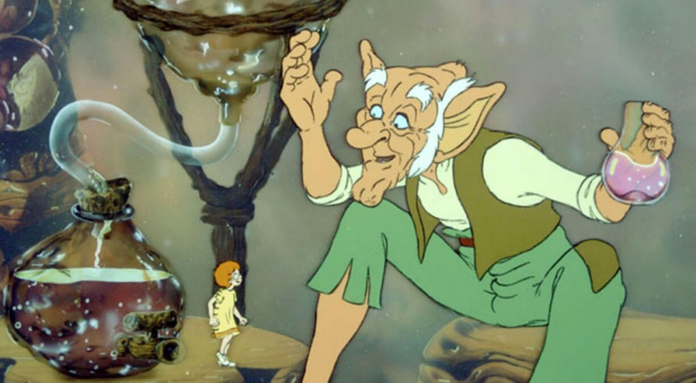

نتفیلکس حق ساخت فیلم و سریال از آثار رولد دال را خریداری کرد
طبق این قرارداد نتفیلکس از این به بعد می تواند آثار بیشتری از رولد دال تولید کند و اکنون حق آثار رولد دال از آن اوست طبق گفته این استریم این دو شرکت آماده همکاری برای تولید فیلم ها و سریال های جذاب از بزرگترین داستان های جهان برای مخاطبان می باشند فیلم چارلی و کارخانه شکلات سازی که نتفیلکس هم اکنون نیز در حال ساخت یک سریال انیمیشنی از روی آن است و سریال اومپا لومپاس که تایکا وایتیتی در حال ساخت آن است نیز در این قرار داد ذکر شده اند

همچنین نتفیلکس قرار است اثری لایو اکشن از کتاب ماتیلدا را نیز در سال 2022 منتشر کند که در آن آلیشا ویر نقش ماتیلدا را ایفا خواهد کرد نتفیلکس به این موضوع نیز اشاره کرد که اقتباس از این کتاب ها تنها به فیلم و سریال ختم نمی شود و این قرار داد شامل ساخت بازی های جدید از رمان های رولد دال نیز خواهد بود و بازی های رولد دال نقش پر رنگ تری نسبت به گذشته خواهند داشت از جمله محبوب ترین آثار رولد دال در سینما میتوان به چارلی و کارخانه شکلات سازی و آقای فاکس اشاره کرد